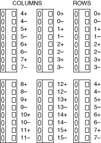

Expanding the NI PXI/PXIe-2529 Matrix Using the NI TB-2635
Use the NI TB-2635 and bare wire to expand the NI PXI/PXIe-2529 (NI 2529).
Getting Started
To expand the NI 2529, you need the following items:
- Bare wire
- Two or more NI TB-2635 terminal blocks
- Two or more NI 2529 switch modules
NI TB-2635 Terminal Reference
Refer to the following figure and complete the procedures in either the Expanding the NI 2529 Columns or Expanding the NI 2529 Rows section to expand the NI 2529.

Complete the following steps to expand the columns of an NI 2529 using an NI TB-2635 terminal block.
- Connect one end of the bare wire to a row screw terminal on one NI TB-2635.
- Connect the other end of the bare wire to the corresponding row screw terminal on another NI TB-2635.
- (Optional) To expand the columns on the NI 2529 further, attach another bare wire to the row screw terminal you accessed in the previous step. Connect the other end of the bare wire to the corresponding row screw terminal on another NI TB-2635.
- Repeat the previous steps for all rows.
Complete the following steps to expand the rows of an NI 2529 using an NI TB-2635 terminal block.
- Connect one end of the bare wire to a column screw terminal on one NI TB-2635.
- Connect the other end of the bare wire to the corresponding column screw terminal on another NI TB-2635.
- (Optional) To expand the rows on the NI 2529 further, attach another bare wire to the column screw terminal you accessed in the previous step. Connect the other end of the bare wire to the corresponding column screw terminal on another NI TB-2635.
- Repeat the previous steps for all columns.